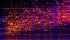

~ translating multi-omic discovery into precision diagnostics ~


tumor ecology & spatial biology
systems & network biology

methods & technology
proteoWizard
overview
The Mallick lab focuses on translating multi-omic discovery into precision diagnostics. We use integrative, multi-omic approaches to model the processes that govern proteome dynamics and then use those models to discover cancer biomarkers and mechanisms.
news
check out our latest papers on
- ProteoWizard (Nature Biotech)
- Cell Squishyness & Sliminess & Metastatic Potential (PNAS)
- Drug Resistance as Mediated by Epigenetics (Genome Medicine)
- SWATH MS Libraries (Nature Protocols)